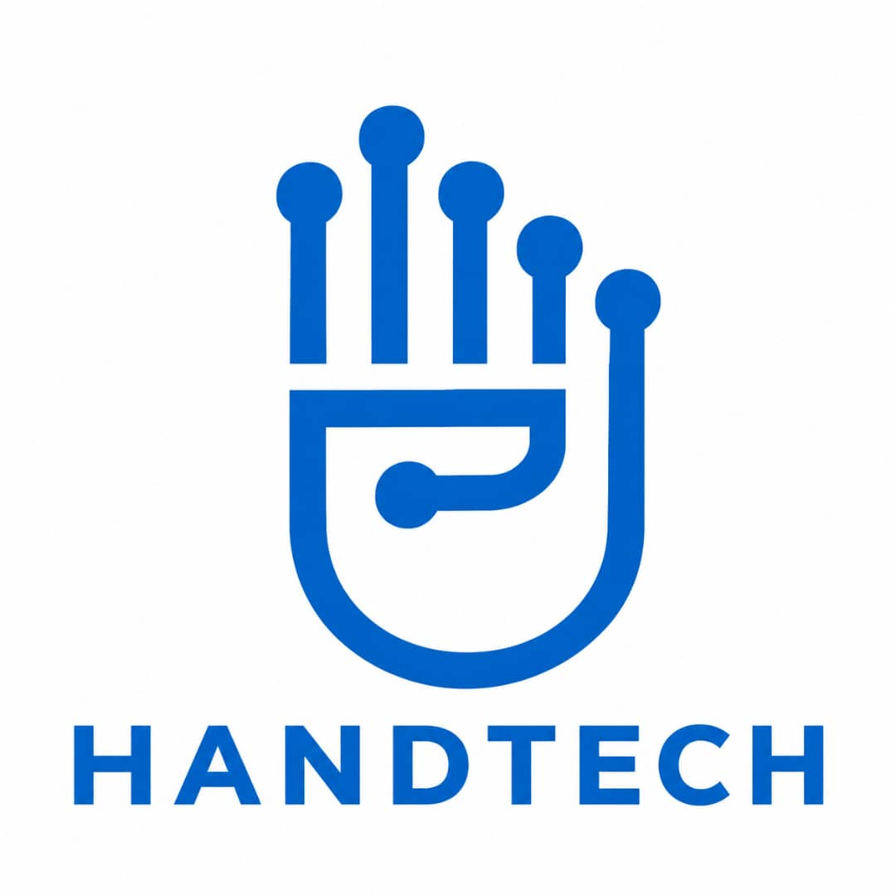
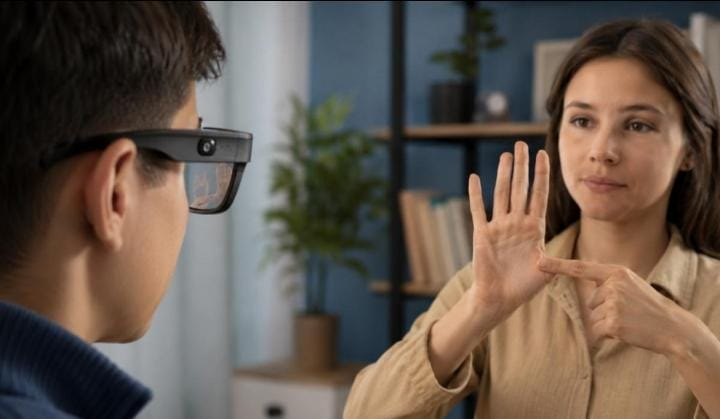
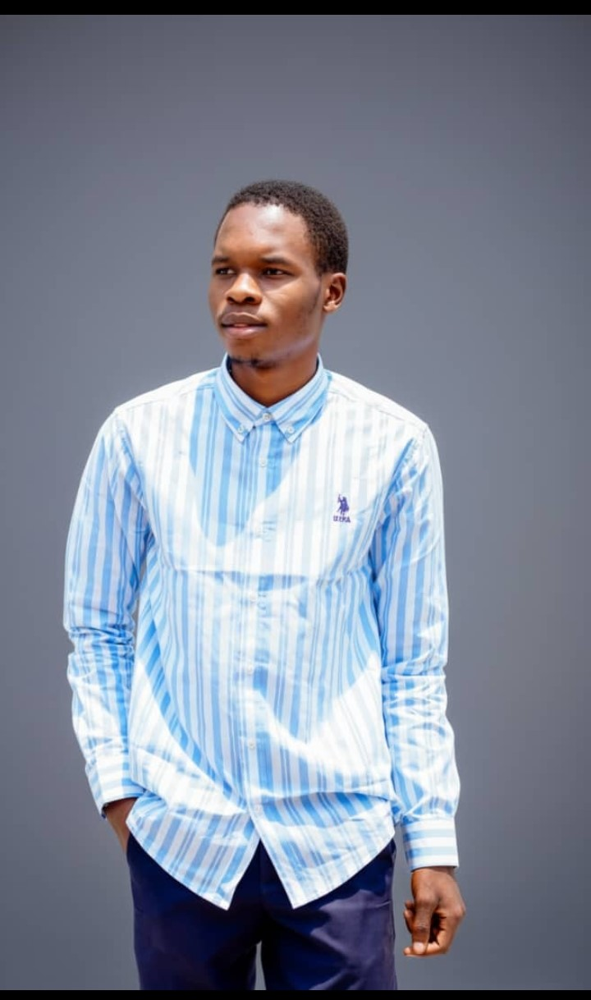

Application mobile
Une interface claire pour traduire les signes, retrouver ses échanges et garder le contrôle.
↗
HAND-TECH Parlons-nous ↗Une technologie congolaise, depuis 2024
Hand-Tech développe une solution combinant application mobile, intelligence artificielle et dispositif connecté pour faciliter la communication entre personnes sourdes et entendantes.

Le problème
Dans les échanges du quotidien, les personnes sourdes et malentendantes rencontrent encore des obstacles pour se faire comprendre des personnes entendantes.
Hand-Tech part d'une conviction simple: la technologie doit rapprocher les personnes, pas les éloigner.
La solution
Une interface claire pour traduire les signes, retrouver ses échanges et garder le contrôle.
↗La vision par ordinateur analyse les gestes capturés et les transforme en texte compréhensible.
↗Un objet discret avec caméra, capteurs et microphone pour accompagner chaque conversation.
↗Comment ça fonctionne ?
Chaque geste suit un parcours précis. La technologie s'efface pour laisser place à l'essentiel: l'échange.
Un écosystème, deux interfaces
Hand-Tech réunit une application pensée pour l'usage quotidien et un dispositif connecté qui étend naturellement ses capacités.
Intelligence artificielle
Grâce à la vision par ordinateur, Hand-Tech analyse les signes capturés par la caméra et apprend progressivement à reconnaître les mouvements qui les composent.
Données & contexte local
Hand-Tech prévoit de développer progressivement un dataset local permettant d'entraîner et d'évaluer le système dans différentes conditions réelles: plusieurs utilisateurs, angles, éclairages et environnements.
Notre MVP
Une première version concrète pour apprendre du terrain et construire avec les personnes concernées.
09 / Notre vision
Hand-Tech ambitionne de développer des technologies d'assistance permettant de faciliter les échanges et de favoriser l'inclusion des personnes sourdes et malentendantes.
Rejoindre le mouvement ↗Notre équipe
Une équipe pluridisciplinaire qui transforme une intuition en outil utile, avec exigence et attention.
Fondatrice · Project Manager
Business Development
Lead Backend · Technical
Team Lead

03Lead Architect · Software
Engineer
AI & Computer Vision
Junior Engineer
À propos de Hand-Tech
Hand-Tech est née d'une envie: mettre l'innovation au service d'une communication plus humaine. Depuis 2024, le projet avance par étapes, en reliant technologie, recherche et compréhension des réalités locales.
12 / Contact
Vous souhaitez collaborer avec Hand-Tech, soutenir notre développement ou en savoir plus sur notre projet ?
Nous contacter ↗